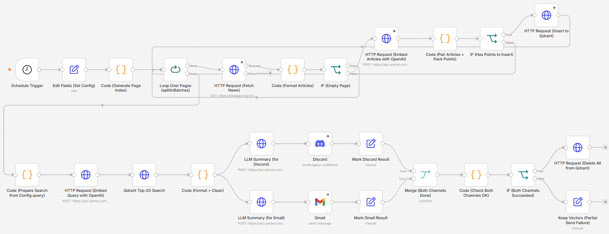
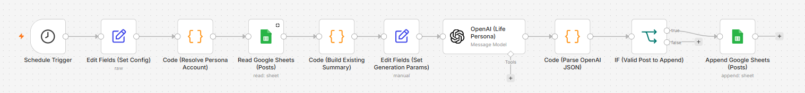
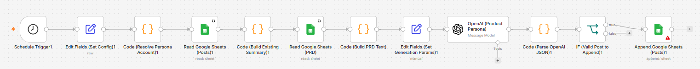
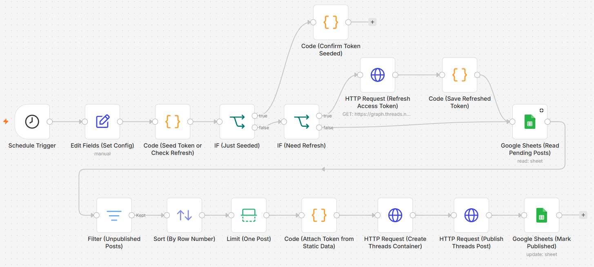
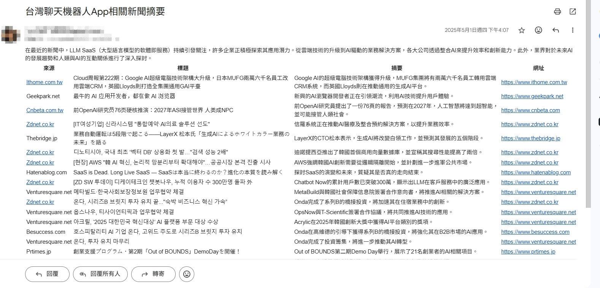
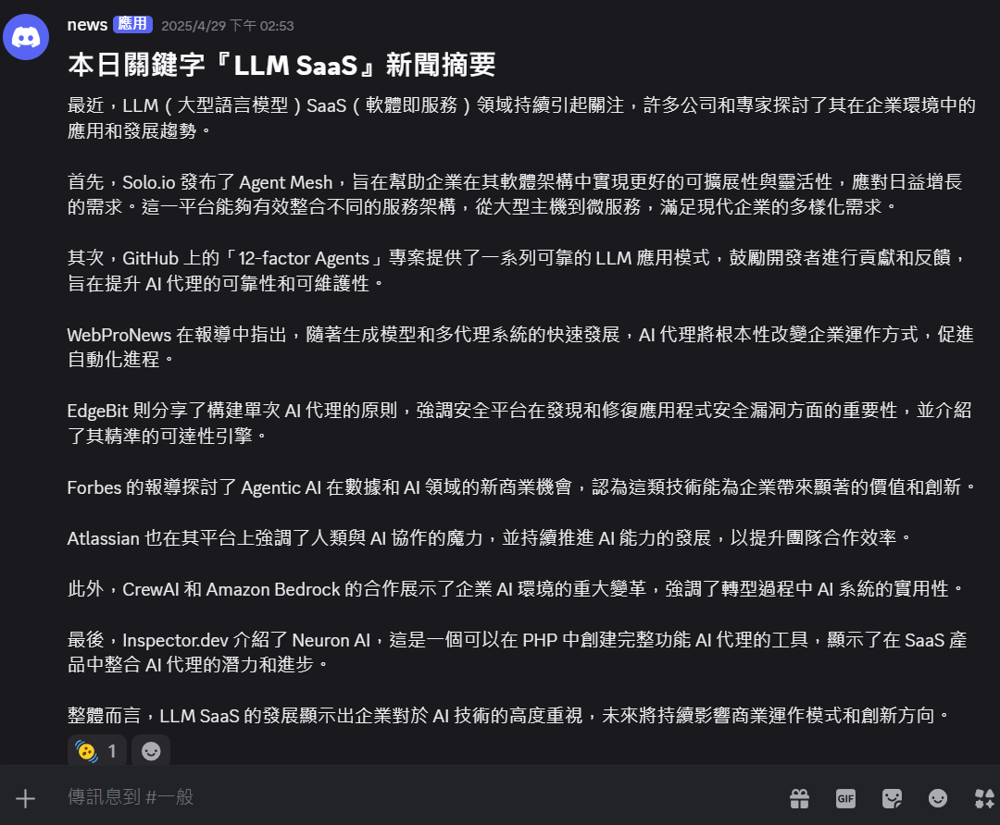
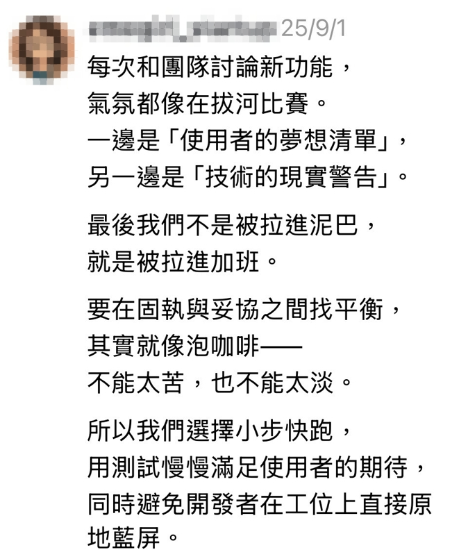
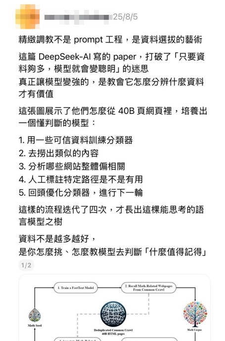

工作流程自動化
AI 摘要新聞與多渠道內容發布系統
這套系統並非一次到位的設計，而是從每天手動追蹤新聞、手動排版貼文的重複性工作出發，逐步以 n8n 建置而成。
以 n8n 整合 NewsAPI、OpenAI（Embeddings / GPT-4o-mini）、Qdrant 向量資料庫與 Gmail / Discord / Threads API，構成三個互相銜接的子系統：新聞摘要（新聞來源為 NewsAPI，產出發送至 Gmail 與 Discord）、文案生成（產出主要發布至 Threads，以品牌理念與開發歷程為主，偶爾涉及時事議題），以及負責實際發文的 Threads 發文管道。所謂「多渠道」指的是依內容性質發送到不同渠道。過程中經歷三次版本迭代，本頁記錄的是每一步的決策依據與嘗試錯誤過程。
專案背景
- 核心問題：每天需以 NewsAPI 查詢、篩選當天與 LLM SaaS 相關的新聞，再手動整理成易讀的摘要，並分別調整排版後發送至 Gmail 與 Discord。另一方面，Threads 帳號的經營則需另外構思品牌理念與開發過程相關的貼文文案，兩項工作性質不同，卻同樣重複且耗時。
- 資源分配取捨：在本專案中，我同時扮演專案發起人、工程師與內容編輯三種角色，難以將大量時間投入重複的 API 整合工作。因此選擇 n8n 這類 Low-Code 工具，將串接介面的心力降到最低，把有限的時間留給更關鍵的判斷：如何撰寫穩定的 Prompt，以及如何清洗資料以避免餵給模型雜訊。
- 先驗證、再擴大：本專案並未一開始就投入向量資料庫的建置，而是先以最簡化的版本驗證「LLM 是否能產出堪用的新聞摘要」；確認可行後，才進一步評估是否需要為處理更大量的新聞，擴大規模建置 Qdrant 向量檢索。
系統迭代歷程
下表整理了三個實際留存的工作流版本，每一版的迭代都是回應前一版遇到的具體限制，而非預先設計的架構藍圖。
| 版本 | 資料來源 | 儲存 / 處理 | 發送渠道 | 遇到的限制 |
|---|---|---|---|---|
| v1｜單篇摘要 | NewsAPI 抓單篇文章 | 無儲存，AI Agent 即時摘要 | Gmail | 僅能處理單篇文章，缺乏篩選與去重機制，資料量增加後即無法負荷 |
| v2｜結構化儲存 | Google News RSS，正則解析 XML | MySQL | Gmail | 資料雖已留存，但僅止於歸檔，缺乏語意搜尋能力，也無法依主題篩選重點 |
| v3｜RAG 向量系統 | NewsAPI 分頁批次抓取 | Qdrant 向量資料庫 | Gmail + Discord | 現階段的取捨：以向量資料庫的維運成本，換取更佳的檢索品質，因此額外建置了自動清理機制 |
版本迭代的關鍵轉折
- v1 → v2：v1 系統一次僅能處理單篇文章，無法區分內容的重要性，也無法保留歷史紀錄。因此 v2 改為批次抓取，並將結果存入 MySQL，讓資料至少具備可追溯的儲存基礎。
- v2 的資料來源選擇（RSS vs. API）：v2 選用 Google News RSS 而非 NewsAPI，主要考量是無需申請金鑰且沒有流量限制，適合用來先驗證「資料能否穩定儲存」這個階段性目標，避免在初期就受限於額度申請或流量控管。
- v2 → v3：資料存入 MySQL 之後才發現，真正的問題並非「是否有儲存」，而是「如何從大量存檔中篩選出與主題最相關的內容」。在 MySQL 下使用關鍵字查詢無法達到語意層級的比對，因此決定投入向量資料庫與 Embedding。
- v3 改回 NewsAPI 的原因：Google News RSS 回傳的內容僅有標題與簡短描述，連結亦為 Google 轉址網址而非原始新聞來源，資訊量不足以支撐語意檢索所需的內容深度。相對而言，NewsAPI 雖需申請金鑰且有請求限制，但回傳的標題、內容、描述與來源皆已結構化，較適合用於向量化處理。因此 v3 改回採用 NewsAPI，以「需要金鑰、有流量限制」的成本，換取「資料完整度足以支撐語意檢索」的效益。
核心系統一：RAG 新聞摘要
這是每日定時排程執行的模組，負責將 NewsAPI 取得的大量新聞整理成可直接閱讀的摘要。以下幾項設計決策值得特別說明，每一項背後都有具體的考量依據，而非單純的技術選型偏好。
1. 分頁批次抓取，而非單次拉取
將 NewsAPI 的抓取拆分為多頁、每批 10 筆寫入 Qdrant，而非一次將數百篇文章送入單一請求。這樣的設計主要是為了避免觸及 API 的流量限制，同時使失敗處理更有效率（單一批次失敗時只需重跑該批，而不必重啟整個流程）。
2. Embedding 模型的選擇與轉換
- 先以免費方案驗證：在原型階段，先採用 Hugging Face 的
all-MiniLM-L6-v2（384 維），以零成本方式驗證向量檢索這個方向的可行性。 - 確認可行後才改用付費方案：正式版改採 OpenAI 的
text-embedding-ada-002（1536 維），Qdrant collection 也隨之以 1536 維重新建立。主因不是單純追求更高維度，而是 GPT-4o-mini 摘要環節本來就要用 OpenAI API 金鑰；Embedding 一併改為 OpenAI，可減少維護 Hugging Face 免費額度與可用性風險，使整條流程集中於單一供應商，維運更單純。
3. 語意檢索與資料清洗
以當日主題的 Embedding 對 Qdrant 執行 Top 20 相似度搜尋，取回最相關的新聞片段後，再清除常見雜訊，包括新聞截斷符號、API 內容中常夾帶的固定字串（如 Learn More），以及多餘的換行與空白。這個步驟直接決定了 LLM 摘要內容的品質，未經清洗的原始資料會使摘要品質下降，這也驗證了「垃圾進、垃圾出」的原則。
4. 同一份資料，兩種輸出格式
清洗後的新聞內容會同時輸入兩組不同的 Prompt：Email 版本要求 GPT-4o-mini 先撰寫一段不超過 100 字的中文趨勢摘要，再輸出為 HTML 表格（來源、標題、摘要、連結）；Discord 版本則要求更精簡的純文字段落，以利在聊天頻道中快速閱讀。將同一份資料依渠道拆分為兩種輸出格式，是因為單一內容格式難以同時滿足不同的閱讀情境。
5. 向量庫的自我清理機制
Gmail 與 Discord 兩個渠道皆成功發送完成後，工作流會自動呼叫 Qdrant 的刪除 API，清空當天寫入的所有向量資料。這是因為系統的定位是提供「每日新聞」，不需要長期累積歷史向量；保持向量庫輕量化，也減少了一項需要持續維護的項目。

n8n 向量 RAG 工作流截圖
工作流執行路徑
核心系統二：文案生成
這個模組最初是為了解決每日構思貼文文案的重複性負擔，開發過程中卻成為我投入最多心力的部分，因為它要求我以產品思維去定義「這個 AI 帳號該傳達什麼內容、以何種方式表達」，而非單純交由 AI 生成文字。這裡的產出主要供 Threads 帳號經營使用，內容以品牌理念與開發歷程為主，並非系統產出的新聞摘要。
1. 結構化 Prompt
Prompt 拆分為 Task、Context、Personality、Rules、Input-Output Schema 與多組自定義的範例六個區塊，明確要求輸出必須為可解析的 JSON 陣列（欄位固定為 Topic、Title、Description，並限制字數區間）。初期未定義明確規格時，AI 經常在輸出中額外附加「以上是我為您整理的內容」等文字，導致後續節點解析失敗；規格明確定義後，輸出穩定度才足以支撐自動化流程，不需要人工逐一審閱即可發布。
2. 內容去重
每次產生新貼文前，工作流會先從 Google Sheets 讀取最近 18 篇既有貼文的標題與摘要，濃縮成一段摘要字串，作為 Prompt 輸入的一部分，並明確要求新輸出不得與該清單重複或進行同義改寫。若無此檢查機制，AI 容易在不同日期產出語意相近的內容，對於需要長期經營的帳號而言，反覆出現重複內容是產出品質不佳的明顯徵兆。
3. 兩種人設經營
生活觀察版人設
生活 / 職場話題・輕鬆幽默
以自我調侃、帶有同理心的語氣，描述工作與生活中真實可能發生的情境，目的是拉近與讀者的距離；內容不強調「解決方案」，而是著重於「這件事確實會發生」的共鳴。
產品分享版人設
產品理念 / 進度分享・溫暖真誠
以「產品開發中」的視角分享理念與進度，並於結尾適度提問以引導互動，避免呈現廣告式語氣，更接近團隊與使用者分享近況的溝通方式。
兩種人設共用同一套生成邏輯（讀取歷史紀錄 → 去重 → 結構化輸出），僅需更換 Topic 與 Style 參數即可切換。這代表此框架具備可重用性，若要建立新帳號或新語氣，不需要重新撰寫整個工作流。
4. 讓內容跟著產品文件走
產品分享版有一項較為特別的設計：直接讀取 Google Sheets 上的 PRD 文件（欄位包含 User Story、Function Name、AC），將這些內容組合為文字後輸入 Prompt，使 AI 依照「目前實際開發中的功能」撰寫貼文，而非憑主觀判斷發布產品訊息。這解決了內容行銷中常見的問題——內容團隊的對外訊息與開發團隊的實際進度脫節。將 PRD 作為內容生成的輸入來源，使對外溝通得以自動貼合產品開發的節奏。

n8n 文案生成工作流截圖（生活觀察版）

n8n 文案生成工作流截圖（產品分享版）
*補充：兩種人設共用同一套生成邏輯，拆成兩條工作流各自排程；產品分享版多讀取 PRD，其餘節點相同。
工作流執行路徑
核心系統三：Threads 自動發文管道
本模組發布的是系統二寫入 Google Sheets 的貼文（品牌理念與開發歷程為主，偶爾涉及時事議題），而非系統一的 RAG 新聞摘要。負責從 Google Sheets 讀取尚未發布的貼文，呼叫 Threads Graph API 完成發布，並在成功後回寫發布狀態。
1. 每次只發一篇
從 Google Sheets 讀取尚未發布的貼文後，先依列序排序，再以每次只取出一篇方式發文。這樣可控制發文節奏，避免一次排程連續發布多則，帳號在短時間內出現大量貼文。
2. 兩階段發文
依 Threads Graph API 規範分兩階段執行：先呼叫 /threads 建立媒體容器並取得 creation_id，再呼叫 /threads_publish 正式發布。這是官方規定的發文流程，無法合併成單一請求。
3. 防重複回寫
發布成功後，立即將該筆資料的 Checkbox 寫回 TRUE，此回寫動作是避免「排程重跑導致同一篇貼文重複發布」的關鍵機制。

n8n Threads 自動發文工作流截圖
工作流執行路徑
效率估算
根據過去手動整理新聞摘要、手動排版貼文的經驗估算，這套流程大約可節省每天 30–60 分鐘的重複性工作時間。節省下來的時間讓我得以將心力投入於 Prompt 品質調整與內容策略規劃，而非重複性的複製貼上作業。

Email 新聞摘要發送截圖

Discord 新聞摘要貼文發布截圖


Threads 貼文發布圖
反思與建議
專案完成後的心得
- 資料品質很重要：同一個 GPT-4o-mini 模型，輸入乾淨資料與輸入原始雜訊資料，輸出品質差異明顯。
- 明確定義輸出規格是穩定性的關鍵：結構化的 Input-Output Schema 搭配自定義的範例，是使 LLM 輸出穩定到可直接串接自動化流程的關鍵，僅以自然語言描述「請輸出 JSON」並不足夠。
- Low-Code 節省的時間需要投入在對的地方：n8n 省下了重複建構 API 整合的時間，但若這些時間未被投入於 Prompt 設計與資料清洗，系統品質依然無法提升。
未來改善方向
- 升級憑證管理機制：目前 API Key 與 Token 直接寫入工作流的參數節點中，這在本專案階段屬於可接受的取捨；但若要正式上線並供更多使用者操作，應改用身分驗證或集中管理機制，而非分散於各個工作流之中。
- 解決 Threads 憑證過期問題：Threads Graph API 的存取憑證屬短效性質、會定期過期，一旦過期，發文自動化流程就會中斷。這個風險在開發過程中已意識到，但在本專案的時程與範圍內尚未真正解決。
- 增加內容成效的回饋機制：目前生成的內容僅有「是否成功發布」的判斷，並未串接任何互動數據（按讚、留言、點擊）以回頭調整主題選擇。